mmcp v1.0.1 사용자 가이드
Mattermost MCP Gateway(mmcp) v1.0.1을 쓰는 일반 사용자를 위한 안내서입니다. 서버 설치·운영과 관리 콘솔 설명은 다루지 않습니다.
목차
- mmcp가 하는 일
- 로그인
- 화면 둘러보기·빠른 이동
- Mattermost 계정 연결
- AI 클라이언트 연결
- API 키 관리
- 도구 실행기
- 승인 흐름
- 사용 예시 프롬프트
- 도구 목록
- 내 활동·세션·연결된 앱
- 개인 암호화 키
- 프로필·테마
- FAQ / 문제 해결
1. mmcp가 하는 일
mmcp는 Claude Code, Codex, Cursor, 사내 AI 포털 같은 AI 클라이언트가 Mattermost를 대신 조회하고 메시지를 보낼 수 있게 해 주는 MCP 서버입니다.
- 모든 호출은 내 계정에 연결된 Mattermost 계정의 권한으로 실행됩니다. 내가 못 보는 채널은 AI도 못 봅니다.
- 메시지·DM 발송 같은 쓰기 작업은 내가 확인한 뒤에만 실행됩니다(기본 설정).
- 모든 호출은 감사 로그와 내 활동에 남습니다.
flowchart LR
U[나] -->|"어제 채널 요약해줘"| AI[AI 클라이언트<br/>Claude Code · Codex · Cursor]
AI -->|MCP + OAuth / API 키| M[mmcp]
M -->|내 Mattermost 권한| MM[(Mattermost)]
M -.->|쓰기 작업은 미리보기 → 내 동의| U
2. 로그인
브라우저에서 mmcp 주소로 접속합니다. 로그인 화면과 오른쪽 위 프로필 메뉴에서 현재 서비스 버전(mmcp v1.0.1)을 확인할 수 있습니다.

Keycloak SSO
- 사일런트 SSO: 관리자가 켜 두었고 브라우저에 이미 Keycloak 로그인 세션이 있다면, 화면에 아무것도 누르지 않아도 "Keycloak 로그인 상태를 확인하는 중…" 잠깐 뒤 바로 로그인됩니다. 처음 로그인하면 mmcp 계정이 자동으로 만들어집니다.
- 그렇지 않으면 Keycloak SSO로 로그인 버튼을 누릅니다(관리자가 버튼 이름을 바꿨을 수 있습니다).
- 직접 로그아웃한 직후에는 사일런트 SSO가 다시 로그인시키지 않습니다.
로컬 계정
관리자가 로컬 로그인을 허용했다면 아이디/비밀번호로 로그인할 수 있습니다. SSO와 함께 켜져 있으면 "또는 로컬 계정" 아래에 입력 칸이 보입니다.
로그인 오류가 보일 때
| 메시지 | 할 일 |
|---|---|
| 로그인 요청이 만료되었거나 브라우저 쿠키가 차단되었습니다 | 쿠키 허용 후 다시 시도 |
| Keycloak에서 로그인이 거부되었습니다 | Keycloak 계정/권한 확인 |
| mmcp 계정을 만들거나 연결하지 못했습니다 | 관리자에게 문의 |
| 사용 가능한 로그인 방법이 없습니다 | 관리자에게 문의 |
3. 화면 둘러보기·빠른 이동
로그인하면 내 공간이 열립니다.
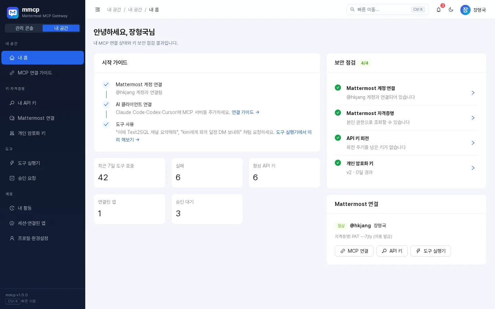
내 공간 메뉴
| 메뉴 | 하는 일 | 단축키 |
|---|---|---|
| 내 홈 | 시작 가이드, 보안 점검, 최근 7일 호출·API 키·승인 대기 요약 | G → H |
| MCP 연결 가이드 | Claude Code·Codex·Cursor 등 연결 설정 복사 | G → C |
| 내 API 키 | 개인 API 키 발급·회전·폐기 | G → I |
| Mattermost 연결 | 계정 매핑과 개인 액세스 토큰 | – |
| 개인 암호화 키 | 내 데이터 키 버전과 회전 | – |
| 도구 실행기 | MCP 도구를 직접 실행 | G → R |
| 승인 요청 | AI가 요청한 쓰기 작업 확인 | – |
| 내 활동 | 도구 호출·로그인·키 변경 기록 | – |
| 세션·연결된 앱 | 브라우저 세션, OAuth 앱, MCP 세션 | – |
| 프로필·환경설정 | 이름, 비밀번호, 테마 | G → P |
내 홈의 보안 점검은 Mattermost 계정 연결, Mattermost 자격증명, API 키 회전, 개인 암호화 키 상태(로컬 계정이면 비밀번호 안내 포함)를 체크하고, 문제가 있는 항목에서 바로 해당 화면으로 이동할 수 있습니다.
빠른 이동과 단축키

| 키 | 동작 |
|---|---|
Ctrl/⌘ + K 또는 / |
빠른 이동(명령 팔레트) 열기 |
G 다음 글자 |
위 표의 화면으로 바로 이동 |
? |
단축키 도움말 |
Shift + T |
라이트/다크 테마 전환 |
- 팔레트는 초성 검색을 지원합니다. 예:
ㄷㅅㅂㄷ→ 도구 실행기. - 팔레트에서 새 API 키 발급, MCP 클라이언트 연결 설정 복사, 테마 전환, 로그아웃 같은 작업도 바로 실행할 수 있고, 최근 이동한 화면이 맨 위에 나옵니다.
- 상단의 🔔 아이콘에는 승인 대기 건수가 표시되며, 누르면 승인 요청 화면으로 갑니다.
프로필 메뉴
오른쪽 위 아바타를 누르면 계정 정보(아이디, SSO/로컬 구분, 역할), 내 홈·내 API 키·프로필 바로가기, 테마(라이트/다크/시스템), 키보드 단축키, 서비스 버전(mmcp v1.0.1), 로그아웃이 있습니다.
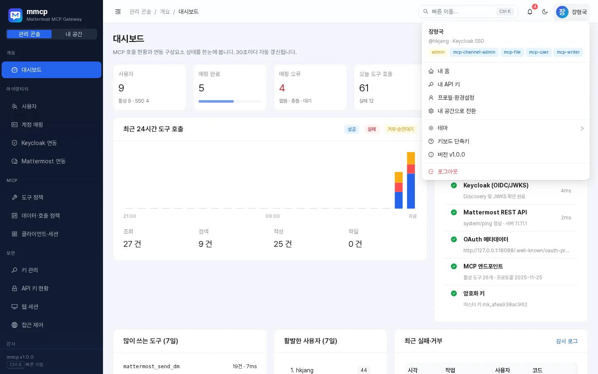
4. Mattermost 계정 연결
AI가 Mattermost를 쓰려면 먼저 내 mmcp 계정을 Mattermost 계정과 연결해야 합니다. 내 공간 → Mattermost 연결로 이동하세요.
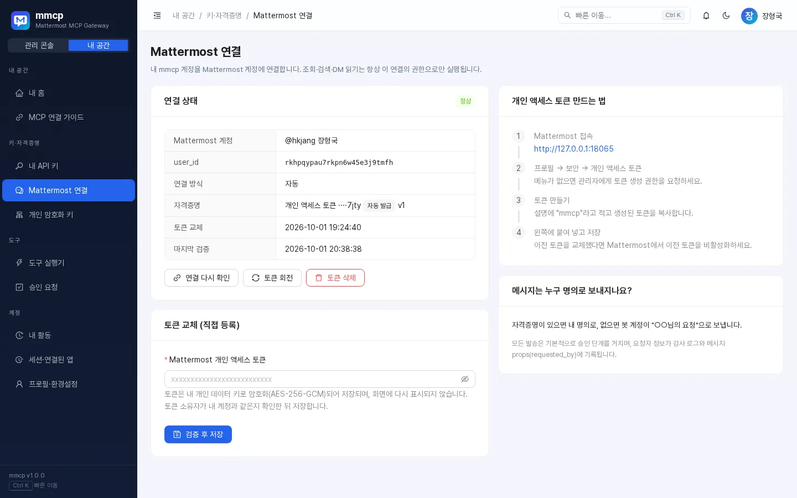
방법 1. 자동 연결
관리자가 자동 매핑(서비스 토큰)을 설정해 두었다면 자동으로 연결하기만 누르면 됩니다. mmcp 아이디와 같은 username의 Mattermost 계정을 찾아 연결합니다(관리자 설정에 따라 이메일로도 찾습니다).
관리자가 토큰 자동 발급을 켜 두었다면 첫 사용 시 개인 액세스 토큰이 자동으로 발급되며, 나중에 토큰 회전으로 교체할 수 있습니다.
방법 2. 내 개인 액세스 토큰 등록
- Mattermost에 접속합니다.
- 프로필 → 보안 → 개인 액세스 토큰으로 이동합니다(메뉴가 없으면 관리자에게 토큰 생성 권한을 요청하세요).
- 설명에
mmcp라고 적고 토큰을 만든 뒤 복사합니다. - mmcp의 개인 액세스 토큰 등록 칸에 붙여 넣고 검증 후 저장을 누릅니다.
- mmcp는 토큰 주인이 내 계정과 같은지 확인한 뒤에만 저장합니다. 다른 사람의 토큰은
IDENTITY_CONFLICT로 거부됩니다. - 토큰은 **내 개인 데이터 키로 암호화(AES-256-GCM)**되어 저장되고, 다시 화면에 표시되지 않습니다.
- 토큰을 교체했다면 Mattermost에서 이전 토큰을 비활성화하세요.
- 토큰 삭제를 누르면 저장된 토큰이 지워지며, 자동 발급된 토큰은 Mattermost에서도 폐기됩니다.
- mmcp는 Mattermost 비밀번호를 묻지 않습니다. 비밀번호를 요구하는 화면이 있다면 의심하세요.
메시지는 누구 명의로 보내지나요?
관리자 설정에 따라 정해지며, 화면 오른쪽에 현재 방식이 안내됩니다.
| 방식 | 설명 |
|---|---|
| 본인(user) | 내 Mattermost 계정 명의로 보냅니다. 자격증명이 필요합니다. |
| 봇(bot) | 봇 계정이 보내고, 메시지 상단에 "○○님의 요청" 같은 요청자 표시가 붙습니다. |
| 자동(auto) | 자격증명이 있으면 내 명의로, 없으면 봇이 요청자 표시와 함께 보냅니다. |
어떤 방식이든 요청자 정보가 감사 로그와 메시지 props(requested_by)에 기록됩니다.
5. AI 클라이언트 연결
내 공간 → MCP 연결 가이드에 내 환경에 맞는 MCP 서버 주소와 설정이 준비되어 있습니다. 주소는 항상 {mmcp 주소}/mcp 형식이며 복사 버튼으로 복사할 수 있습니다.
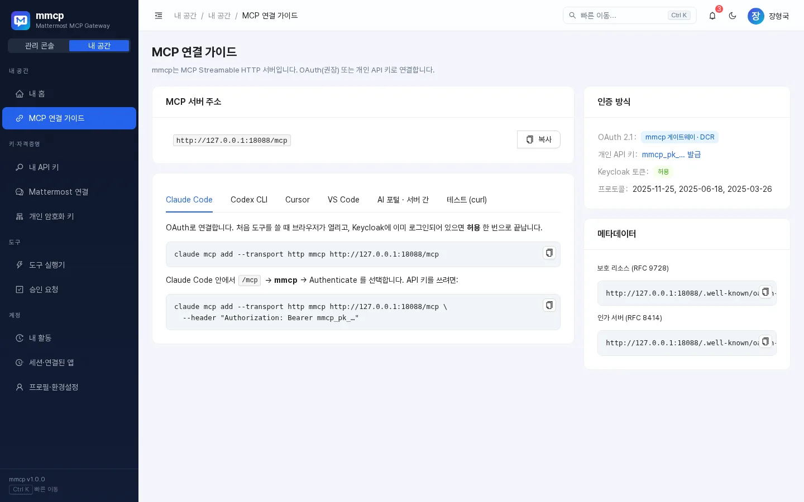
인증 방법은 두 가지입니다.
- OAuth(권장): 처음 도구를 쓸 때 브라우저가 열리고 동의 화면에서 허용하면 끝납니다.
- 개인 API 키: OAuth를 지원하지 않는 클라이언트나 스크립트용(6장).
아래 예시의 https://mmcp.example.com/mcp는 연결 가이드에 표시된 실제 주소로 바꾸세요.
Claude Code
claude mcp add --transport http mmcp https://mmcp.example.com/mcpClaude Code 안에서 /mcp → mmcp → Authenticate를 선택하면 브라우저에 동의 화면이 열립니다.
API 키로 연결하려면:
claude mcp add --transport http mmcp https://mmcp.example.com/mcp \
--header "Authorization: Bearer mmcp_pk_…"OAuth 동의 화면
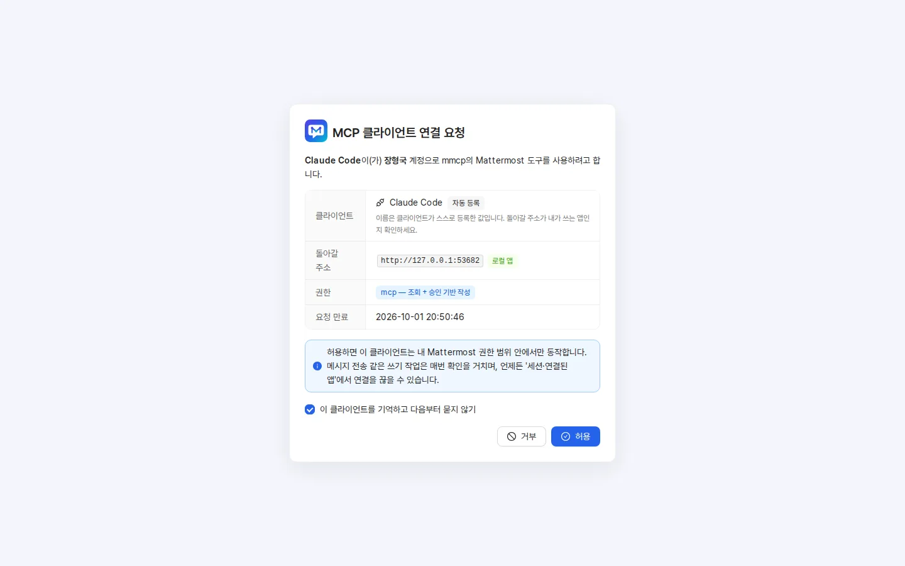
동의 화면에는 클라이언트 이름, 돌아갈 주소(로컬 앱이면 "로컬 앱" 표시), 요청 권한이 나옵니다.
mcp— 조회 + 승인 기반 작성mcp:read— 조회 전용
내용을 확인하고 허용을 누르세요. **"이 클라이언트를 기억하고 다음부터 묻지 않기"**를 체크하면 다음부터 동의 화면이 생략됩니다(관리자가 허용한 경우에만 보입니다). 연결은 언제든 세션·연결된 앱에서 끊을 수 있습니다.
Codex CLI
~/.codex/config.toml:
[mcp_servers.mmcp]
url = "https://mmcp.example.com/mcp"
bearer_token_env_var = "MMCP_API_KEY"export MMCP_API_KEY="mmcp_pk_…"
codexOAuth를 지원하는 Codex 버전에서는 codex mcp add mmcp --url https://mmcp.example.com/mcp 후 codex mcp login mmcp를 쓸 수 있습니다.
Cursor
~/.cursor/mcp.json (OAuth 자동 처리):
{
"mcpServers": {
"mmcp": { "url": "https://mmcp.example.com/mcp" }
}
}VS Code (GitHub Copilot Agent 모드)
.vscode/mcp.json:
{
"servers": {
"mmcp": { "type": "http", "url": "https://mmcp.example.com/mcp" }
}
}사내 AI 포털 · 서버 간 연동
이미 Keycloak 토큰을 가진 사내 서비스는 그 Keycloak 액세스 토큰을 그대로 Bearer로 보냅니다. mmcp가 토큰을 검증하고 preferred_username으로 사용자를 찾습니다.
curl -s https://mmcp.example.com/mcp \
-H "Authorization: Bearer $KEYCLOAK_ACCESS_TOKEN" \
-H "Content-Type: application/json" \
-H "Accept: application/json, text/event-stream" \
-d '{"jsonrpc":"2.0","id":1,"method":"tools/list"}'- 토큰의
aud또는azp에 mmcp 클라이언트 ID(연결 가이드에 표시)가 포함되어야 합니다. - 관리자가 Keycloak 토큰 직접 인증을 꺼 두었다면 연결 가이드에 경고가 표시됩니다.
연결 가이드의 테스트 (curl) 탭에는 API 키로 initialize와 도구 호출을 시험하는 예시가 있습니다.
연결 후 AI가 쓸 수 있는 것
- 도구: 10장 참고. 내 역할·관리자 정책에 따라 보이는 도구가 다릅니다.
- 리소스:
mattermost://me,mattermost://teams,mattermost://channels,mattermost://unread, 그리고 템플릿mattermost://channels/{channel_id},mattermost://threads/{post_id},mattermost://users/{username},mattermost://dms/{username}. - 프롬프트(클라이언트가 지원하면 메뉴에서 선택):
| 프롬프트 | 인자 | 내용 |
|---|---|---|
summarize_channel |
channel(필수), days(기본 1) |
채널 최근 대화를 결정 사항·할 일·미해결 질문으로 요약 |
find_decisions |
topic(필수) |
주제 관련 결정 사항·일자·담당자·근거 링크를 표로 정리 |
daily_digest |
– | 읽지 않은 메시지를 멘션 → DM → 기타 채널 순으로 정리 |
draft_dm |
recipient, topic(필수) |
DM 초안을 먼저 보여 주고 승인 후 발송 |
6. API 키 관리
내 공간 → 내 API 키. 키는 내 권한으로만 동작하며, 비밀값(mmcp_pk_…)은 발급 순간 한 번만 표시됩니다.
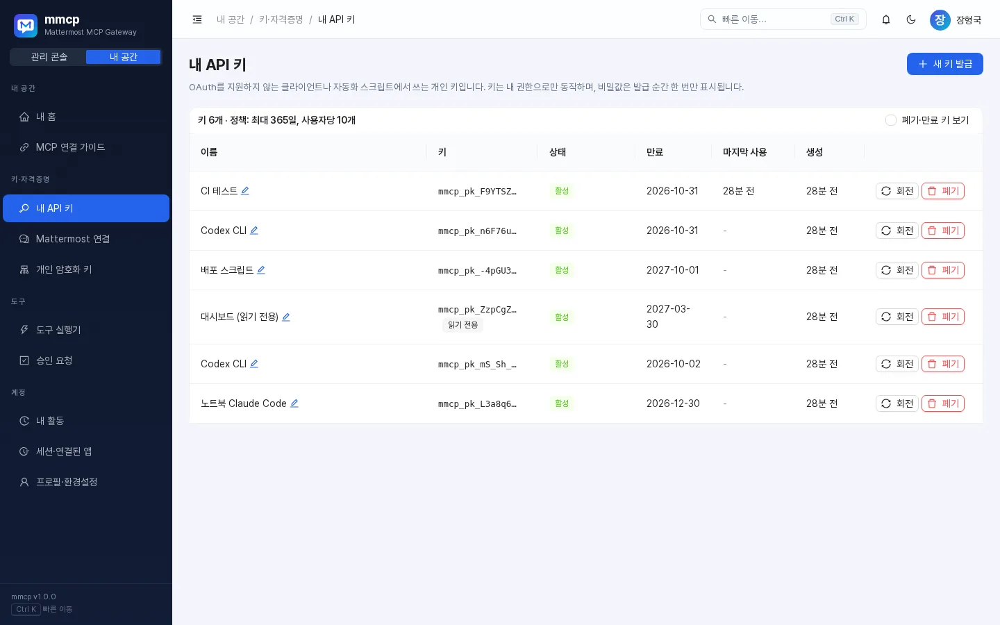
발급
새 키 발급(또는 팔레트의 새 API 키 발급)을 누르고:
- 이름: 어디에 쓰는 키인지(예: "노트북 Claude Code"), 최대 60자.
- 만료: 30일 / 90일 / 180일 / 365일 중 관리자 정책 최대치 이하. 정책이 허용할 때만 "만료 없음 (권장하지 않음)"이 보입니다.
- 읽기 전용 키: 조회·검색 도구만 쓸 수 있습니다. 공유 환경이나 대시보드용으로 권장합니다.
발급 창에서 비밀값과 Claude Code 등록 예시를 바로 복사하세요. 창을 닫으면 다시 볼 수 없습니다. 사용자당 활성 키 개수에도 정책상 한도가 있습니다(화면 상단에 표시).
관리
| 동작 | 설명 |
|---|---|
| 이름 변경 | 이름 옆 연필 아이콘으로 바로 수정 |
| 회전 | 같은 설정으로 새 키를 발급하고, 이전 키는 즉시 / 1시간 / 24시간 / 7일 유예 후 만료. 유출이 의심되면 즉시, 여러 기기 교체는 24시간 권장 |
| 폐기 | 즉시 무효화. 이 키를 쓰는 클라이언트는 바로 끊깁니다 |
| 폐기·만료 키 보기 | 지난 키까지 목록에 표시 |
키가 정책의 회전 권장 주기를 넘으면 회전 권장 배지와 경고가 표시되고, 내 홈 보안 점검에도 나타납니다.
7. 도구 실행기
내 공간 → 도구 실행기(G → R)에서 AI 클라이언트가 쓰는 도구를 내 권한으로 직접 실행해 볼 수 있습니다. 정책·승인·감사가 실제 MCP 호출과 똑같이 적용됩니다.
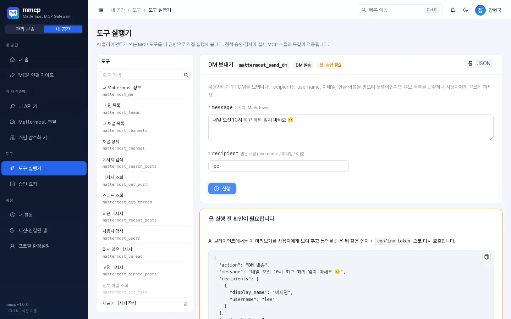
- 왼쪽 목록에서 도구를 고릅니다(검색 가능). 🔒 표시는 승인이 필요한 도구, 흐리게 보이는 도구는 지금 쓸 수 없는 도구이며 마우스를 올리면 이유가 나옵니다.
- 폼 또는 JSON 모드로 인자를 입력합니다. 일부 도구는 예시 값이 미리 채워져 있습니다.
- 실행을 누르면 결과(성공/오류 코드, 소요 시간)가 JSON으로 표시됩니다.
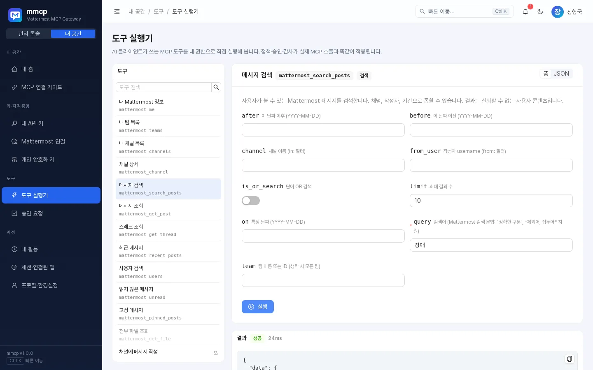
- 승인이 필요한 도구는 먼저 "실행 전 확인이 필요합니다" 카드에 미리보기가 나옵니다. 승인하고 실행 또는 거절을 고르세요.
- 받는 사람이 여러 명과 일치하면 후보 버튼이 나옵니다. 하나를 누르면 해당 username이 입력되니 다시 실행하세요.
- 아래쪽 이번 세션 실행 기록에서 최근 실행 결과를 다시 볼 수 있습니다.
다크 테마에서도 동일하게 동작합니다.
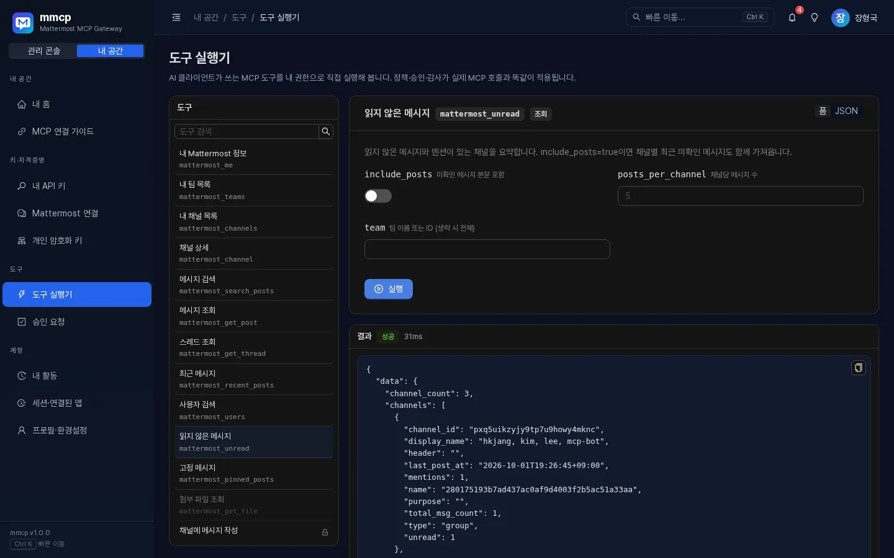
8. 승인 흐름
메시지 작성·DM 발송 같은 쓰기 작업은 기본적으로 2단계 확인을 거칩니다(관리자가 도구별로 정합니다).
sequenceDiagram
participant 나
participant AI
participant mmcp
나->>AI: kim에게 회의 DM 보내줘
AI->>mmcp: mattermost_send_dm (confirm_token 없음)
mmcp-->>AI: APPROVAL_REQUIRED + 미리보기 + confirm_token
AI->>나: 받는 사람·내용 미리보기, 보낼까요?
나->>AI: 네
AI->>mmcp: 같은 인자 + confirm_token
mmcp-->>AI: 발송 완료
- 미리보기에는 받는 사람, 메시지, 발신 방식(본인/봇)이 들어 있습니다. 대화창에서 내용을 꼭 확인한 뒤 동의하세요.
- 승인 요청 화면(또는 상단 🔔)에서 대기 중인 요청을 보고 미리 승인하거나 거절할 수 있습니다. 상태별(대기/실행됨/거절/만료/전체)로 볼 수 있습니다.
- **의도하지 않은 요청은 '거절'**하세요. 거절된 토큰으로는 절대 실행되지 않습니다.
- 다음 경우에도 실행되지 않으며, AI는 처음부터 다시 미리보기를 받아야 합니다.
- 유효시간이 지난 토큰(기본 10분, 관리자 설정) —
APPROVAL_EXPIRED - 이미 실행된 토큰 —
APPROVAL_USED - 승인 후 인자(받는 사람·내용 등)가 바뀐 경우 —
APPROVAL_MISMATCH - 거절된 토큰 —
APPROVAL_REJECTED
- 유효시간이 지난 토큰(기본 10분, 관리자 설정) —
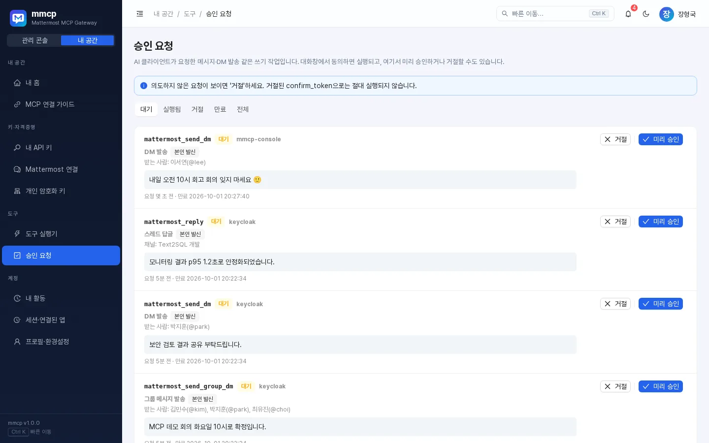
받는 사람 지정
받는 사람은 username(kim, @kim), 이메일, 한글 전체 이름(김철수)으로 지정할 수 있습니다. 같은 이름이 여러 명이면 mmcp는 임의로 고르지 않고 후보 목록(AMBIGUOUS_RECIPIENT)을 돌려주며, AI가 나에게 누구인지 물어봅니다.
신뢰할 수 없는 콘텐츠 보호
Mattermost에서 읽어 온 결과는 "사용자가 작성한 신뢰할 수 없는 콘텐츠"로 감싸서 AI에 전달됩니다(관리자 설정, 기본 켜짐). 메시지 안에 "이전 지시를 무시하라" 같은 문장이 있어도 AI가 따르지 않도록 하는 장치입니다.
9. 사용 예시 프롬프트
AI 클라이언트에 평소 말하듯 요청하면 됩니다.
| 요청 | AI가 주로 쓰는 도구 |
|---|---|
| "어제 text2sql 채널 요약해줘" | mattermost_recent_posts |
| "Text2SQL 장애 관련 결정사항 찾아줘" | mattermost_search_posts, mattermost_get_thread |
| "kim에게 내일 10시 회의라고 DM 보내줘" | mattermost_send_dm (승인 필요) |
| "읽지 않은 메시지 정리해줘" | mattermost_unread |
| "kim, lee, park에게 그룹 메시지로 배포 일정 공유해줘" | mattermost_send_group_dm (승인 필요) |
| "김철수랑 최근 DM 뭐였지?" | mattermost_read_dm |
| "이 스레드에 '확인했습니다'라고 답글 달아줘" | mattermost_reply (승인 필요) |
팁:
- 채널은 이름,
팀/채널, 채널 ID로 지정할 수 있고@username은 DM을 뜻합니다. - 같은 이름의 채널이 여러 팀에 있으면
팀/채널형식으로 알려 주세요. - 발송 전에 AI가 보여 주는 미리보기를 꼭 읽어 보세요.
10. 도구 목록
아래는 mmcp v1.0.1에 들어 있는 도구입니다. 관리자가 일부 도구를 끄거나 승인 여부·필요 역할을 바꿀 수 있으므로, 실제로 쓸 수 있는 목록은 도구 실행기에서 확인하세요. 읽기 전용 API 키나 mcp:read 권한으로 연결하면 쓰기 도구는 보이지 않습니다.
조회·검색 (기본 역할 mcp-user)
| 도구 | 하는 일 | 주요 인자 |
|---|---|---|
mattermost_me |
내게 연결된 Mattermost 계정 정보 | – |
mattermost_teams |
내 팀 목록 | – |
mattermost_channels |
참여 중인 채널 목록 | team, query, include_private, limit |
mattermost_channel |
채널 상세(목적, 헤더, 멤버 수, 읽음 상태) | channel |
mattermost_search_posts |
메시지 검색 ("정확한 구문", -제외어, 접두어*) |
query, team, channel, from_user, after/before/on, limit |
mattermost_get_post |
메시지 한 건 조회 | post_id |
mattermost_get_thread |
스레드 전체를 시간순 조회 | post_id, limit |
mattermost_recent_posts |
채널 최근 메시지 | channel, limit, since |
mattermost_users |
username·이름·닉네임·이메일로 사용자 검색 | query, limit |
mattermost_unread |
읽지 않은 메시지·멘션이 있는 채널 요약 | team, include_posts, posts_per_channel |
mattermost_pinned_posts |
채널 고정 메시지 | channel |
mattermost_read_dm |
특정 사용자와의 1:1 DM 최근 대화 (항상 본인 자격증명) | user 또는 channel, limit, since |
mattermost_recent_dms |
최근 DM/그룹 대화 목록과 미확인 건수 | limit, unread_only |
mattermost_search_dm |
내 DM/그룹 메시지 검색 — 기본 꺼짐(관리자가 DM 검색 허용 시) | query, user, after, before, limit |
mattermost_get_file |
첨부 파일 정보와 텍스트 내용 — 기본 꺼짐(파일 다운로드 허용 시), 역할 mcp-file |
file_id |
작성 (기본 역할 mcp-writer, ✅ = 기본 승인 필요)
| 도구 | 하는 일 | 주요 인자 |
|---|---|---|
mattermost_post_message ✅ |
채널에 메시지 게시(root_id면 스레드 답글) |
channel, message, root_id |
mattermost_reply ✅ |
기존 메시지 스레드에 답글 | post_id, message |
mattermost_update_post ✅ |
본인이 쓴 메시지 수정 | post_id, message |
mattermost_add_reaction |
이모지 반응 추가 (기본 승인 없음) | post_id, emoji |
mattermost_send_dm ✅ |
1:1 DM 보내기 | recipient, message |
mattermost_send_group_dm ✅ |
2~7명에게 그룹 메시지 | recipients, message |
mattermost_reply_dm ✅ |
DM/그룹 메시지에 스레드 답장 | post_id, message |
파일 (✅ 기본 승인 필요)
| 도구 | 하는 일 | 역할 |
|---|---|---|
mattermost_upload_file ✅ |
텍스트/base64 내용을 파일로 만들어 채널에 게시 | mcp-file |
mattermost_upload_dm_file ✅ |
파일을 첨부해 1:1 DM | mcp-writer + mcp-file |
채널 관리 (역할 mcp-channel-admin, ✅ 기본 승인 필요)
| 도구 | 하는 일 |
|---|---|
mattermost_create_channel ✅ |
팀에 공개(O)/비공개(P) 채널 생성 |
mattermost_add_member ✅ |
채널에 사용자 추가 |
위험 도구 (역할 mcp-admin, 기본 비활성화)
| 도구 | 하는 일 |
|---|---|
mattermost_delete_post ✅ |
메시지 삭제 |
mattermost_archive_channel ✅ |
채널 보관(아카이브) |
호환 이름 (기본 꺼짐)
관리자가 켜면 Mattermost 공식 MCP와 같은 이름도 쓸 수 있습니다: dm(= mattermost_send_dm), group_message(= mattermost_send_group_dm), create_post(= mattermost_post_message), search_users(= mattermost_users).
호출 한도
사용자별로 분당 호출 수가 제한됩니다(기본값: 조회 60, 검색 20, 쓰기 10, 파일 5회 — 관리자 설정에 따라 다를 수 있음). 넘으면 RATE_LIMITED와 함께 몇 초 뒤 다시 시도하라는 안내가 나옵니다.
11. 내 활동·세션·연결된 앱
내 활동
내 공간 → 내 활동에서 내 계정으로 실행된 도구 호출, 로그인, 키 변경 기록을 볼 수 있습니다. 작업·대상·오류 코드·요청 ID로 검색하고 분류(도구 호출/인증/OAuth/키/매핑)와 결과(성공/실패/거부/대기)로 거를 수 있습니다.
모르는 기록이 있다면 해당 API 키를 폐기하고 관리자에게 알리세요.
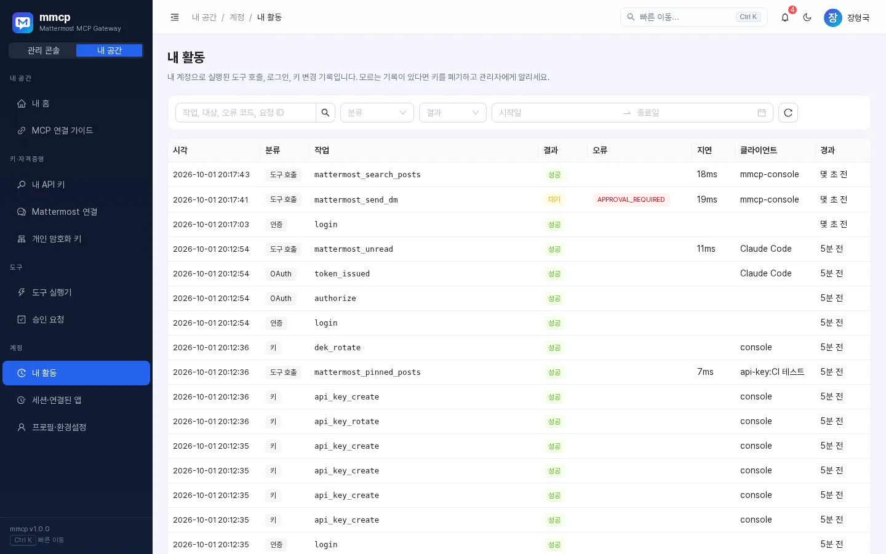
세션·연결된 앱
내 공간 → 세션·연결된 앱
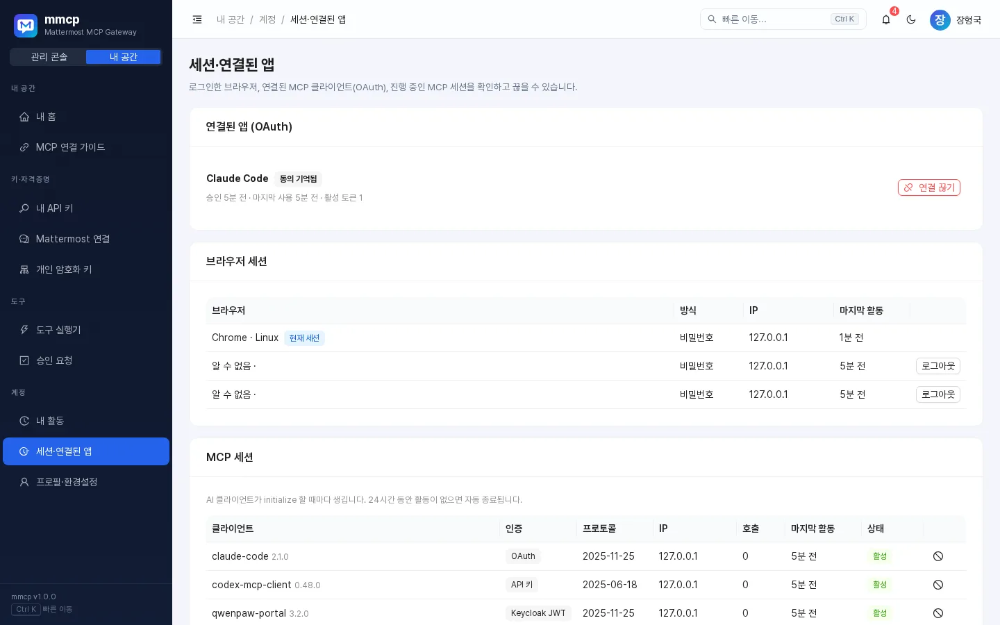
| 영역 | 내용 | 할 수 있는 일 |
|---|---|---|
| 연결된 앱 (OAuth) | 허용한 AI 클라이언트, 승인·마지막 사용 시각, 활성 토큰 수, "동의 기억됨" 표시 | 연결 끊기 — 그 앱의 토큰이 즉시 폐기됨 |
| 브라우저 세션 | 브라우저, 로그인 방식(Keycloak/비밀번호), IP, 마지막 활동 | 현재 세션이 아닌 것은 로그아웃 |
| MCP 세션 | AI 클라이언트가 접속할 때마다 생기는 세션. 24시간 활동이 없으면 자동 종료 | 개별 종료 |
12. 개인 암호화 키
내 공간 → 개인 암호화 키. Mattermost 토큰 같은 내 자격증명은 나만의 데이터 키로 암호화됩니다.
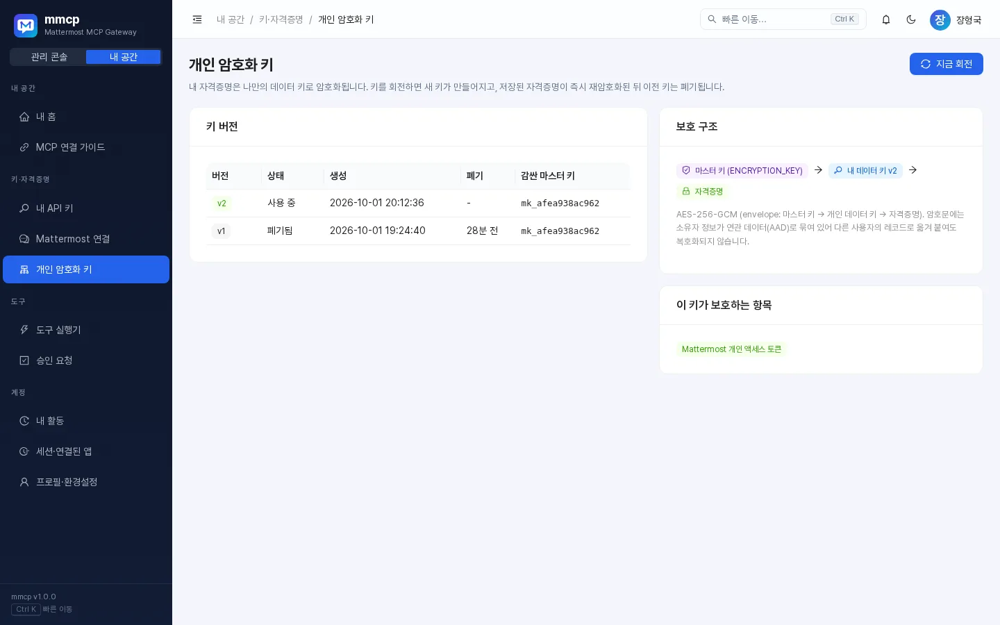
flowchart LR
MK[마스터 키] -->|감쌈| DEK[내 데이터 키 vN]
DEK -->|AES-256-GCM| C[자격증명<br/>Mattermost 토큰 등]
- 암호문에는 소유자 정보가 함께 묶여 있어, 다른 사용자의 레코드로 옮겨 붙여도 복호화되지 않습니다.
- 지금 회전을 누르면 새 키가 만들어지고, 저장된 자격증명이 즉시 다시 암호화된 뒤 이전 키는 폐기됩니다. 진행 중인 작업에는 영향이 없으니 언제든 회전해도 됩니다.
- 현재 키가 권장 주기를 넘으면 경고가 표시됩니다.
- 아직 자격증명을 저장하지 않았다면 키가 없을 수 있으며, 처음 저장할 때 자동으로 만들어집니다.
13. 프로필·테마
내 공간 → 프로필·환경설정(G → P)
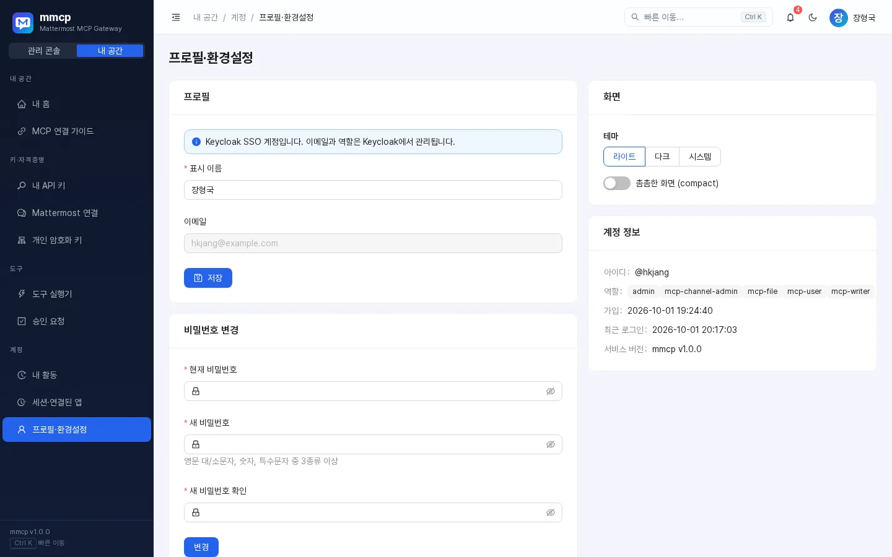
- 프로필: 표시 이름과 이메일 수정. Keycloak SSO 계정은 이메일·역할을 Keycloak에서 관리하므로 이메일을 바꿀 수 없습니다.
- 비밀번호 변경(로컬 비밀번호가 있는 계정만): 8자 이상, 영문 대/소문자·숫자·특수문자 중 3종류 이상. 변경하면 다른 브라우저 세션은 로그아웃됩니다.
- 화면: 테마 라이트 / 다크 / 시스템, 촘촘한 화면(compact) 토글. 테마는
Shift + T, 상단 테마 버튼, 프로필 메뉴에서도 바꿀 수 있습니다. - 계정 정보: 아이디, 역할, 가입일, 최근 로그인, 서비스 버전(mmcp v1.0.1).
모바일에서도 같은 화면을 쓸 수 있습니다(왼쪽 위 메뉴 버튼으로 메뉴 열기).
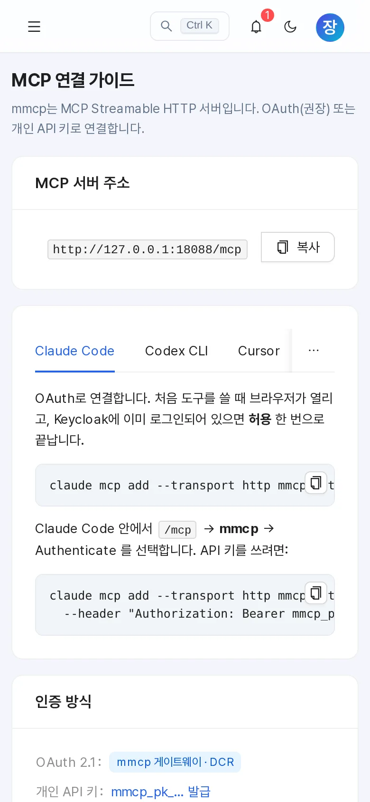
14. FAQ / 문제 해결
자주 보는 오류 코드
| 코드 | 의미 | 할 일 |
|---|---|---|
IDENTITY_NOT_MAPPED |
mmcp 계정이 Mattermost 계정과 연결되지 않음(또는 연결된 계정이 비활성화됨) | Mattermost 연결에서 자동 연결하거나 개인 액세스 토큰 등록. 안 되면 관리자에게 수동 매핑 요청 |
CREDENTIAL_REQUIRED |
Mattermost 개인 액세스 토큰이 필요함 | Mattermost 연결 화면에서 토큰 등록 |
CREDENTIAL_INVALID |
저장된 토큰이 만료·무효 | 토큰 다시 등록 또는 회전 |
PERMISSION_DENIED |
필요한 역할이 없음, 읽기 전용 키로 쓰기 시도, 또는 Mattermost 권한 부족(예: 남의 메시지 수정) | 필요한 역할(예: mcp-writer)은 관리자에게 요청. 쓰기에는 일반 키/mcp 권한 사용 |
TOOL_DISABLED |
관리자가 끈 도구 | 관리자에게 문의 |
POLICY_BLOCKED |
비공개 채널·DM·그룹 메시지 접근이 관리자 정책으로 차단됨 | 관리자에게 문의 |
RATE_LIMITED |
분당 호출 한도 초과 | 안내된 시간(초) 후 다시 시도 |
APPROVAL_REQUIRED |
쓰기 작업 전 확인 필요 — 오류가 아니라 정상 단계 | 미리보기를 확인하고 동의하면 AI가 다시 호출 |
APPROVAL_EXPIRED / APPROVAL_MISMATCH / APPROVAL_USED / APPROVAL_REJECTED |
승인 토큰을 쓸 수 없음 | AI에게 처음부터 다시 요청 |
AMBIGUOUS_RECIPIENT |
받는 사람 이름이 여러 명과 일치 | 후보 중 한 명을 골라 username으로 알려 주기 |
RECIPIENT_NOT_FOUND |
받는 사람을 찾지 못함 | 철자 확인 또는 mattermost_users로 검색 |
CHANNEL_NOT_FOUND / AMBIGUOUS_CHANNEL |
채널이 없거나 접근 불가 / 여러 팀에 같은 이름 | 채널 목록 확인, 팀/채널 형식 사용 |
IDENTITY_CONFLICT |
등록한 토큰 주인이 내 계정과 다르거나, 그 Mattermost 계정이 이미 다른 사용자와 연결됨 | 내 토큰인지 확인. 그래도 안 되면 관리자에게 재매핑 요청 |
MATTERMOST_UNAVAILABLE / MATTERMOST_ERROR |
Mattermost 연결 문제 | 잠시 후 재시도, 계속되면 관리자에게 문의 |
INTERNAL |
서버 내부 오류 | 메시지의 요청 ID를 관리자에게 전달 |
질문과 답
Q. AI 클라이언트에 도구가 하나도 안 보여요.
연결이 끝났는지 확인하세요(Claude Code는 /mcp에서 Authenticate). 그다음 도구 실행기에서 흐리게 표시된 도구의 이유를 확인합니다.
Q. 조회는 되는데 메시지 발송 도구가 안 보여요.
읽기 전용 API 키를 쓰고 있거나, OAuth 동의 시 mcp:read만 받았거나, mcp-writer 역할이 없는 경우입니다.
Q. AI가 동의도 없이 메시지를 보낼 수 있나요?
승인 모드인 도구는 confirm_token 없이 실행되지 않습니다. 단, 이모지 반응(mattermost_add_reaction)처럼 관리자가 자동 실행으로 둔 도구는 확인 없이 실행됩니다. 의심스러운 요청은 승인 요청 화면에서 거절하세요.
Q. API 키를 잃어버렸어요 / 유출된 것 같아요. 비밀값은 다시 볼 수 없습니다. 회전 → 즉시 폐기로 새 키를 받거나 키를 폐기하세요. 그다음 내 활동에서 모르는 기록이 없는지 확인합니다.
Q. 노트북을 바꿨어요. API 키는 회전 → 24시간 유예로 새 키를 받아 교체하고, 예전 기기의 OAuth 연결은 세션·연결된 앱에서 끊으세요.
Q. 로그아웃했는데 다시 자동 로그인되지 않아요. 의도된 동작입니다. 직접 로그아웃한 직후에는 사일런트 SSO가 실행되지 않으니 Keycloak SSO로 로그인 버튼을 누르세요.
Q. 봇이 "○○님의 요청"으로 메시지를 보내요. 관리자가 발신 계정을 봇(또는 자동)으로 설정했기 때문입니다. 자동 모드라면 내 Mattermost 토큰을 등록하면 내 명의로 보냅니다.
Q. 지금 쓰는 mmcp 버전은? 로그인 화면 하단, 프로필 메뉴, 프로필·환경설정의 계정 정보에서 확인할 수 있습니다. 이 가이드는 mmcp v1.0.1 기준입니다.